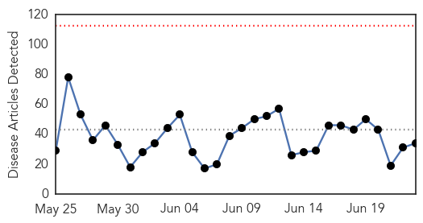

Meningitis
30-Day Web Trend
3 alerts, 0 warnings
30-Day Twitter Trend
0 alerts, 0 warnings

Article Locations

Article Confidences

Top Articles:
- 0.898
- Meningitis survivor urges wider use of lifesaving vaccine
- 0.879
- Meninigitis Survivor Urges Wider Use Of Lifesaving Vaccine
- 0.759
- Meningitis B vaccine on the way for England/Scotland
- 0.730
- New meningitis jab for babies
- 0.592
- Amazing Benefits of Drinking Water on Empty Stomach in the Early Morning
- 0.572
- GSK sells two meningitis vaccines to Pfizer for $130 mn
- 0.572
- GSK sells two meningitis vaccines to Pfizer for $130 mn
- 0.572
- GSK sells two meningitis vaccines to Pfizer for $130 mn
- 0.553
- adults can get meningitis too, says Wearside survivor
- 0.545
- Mother of Kalamazoo College student killed by meningitis to testify to CDC
- 0.542
- Pfizer to acquire two meningitis vaccines from GSK for 130 mn
- 0.520
- to Urge CDC Panel to Recommend Meningitis Vaccines
Top Tweets:
-
No tweets found for Jun 23, 2015
Ebola
30-Day Web Trend
0 alerts, 0 warnings

30-Day Twitter Trend
0 alerts, 0 warnings

Article Locations

Article Confidences

Top Articles:
- 1.000
- New Ebola cases frustrate hopes of defeating the virus in Sierra Leone
- 1.000
- Ebola epidemic was disaster for malaria control: study - Guinea
- 0.999
- Thousands of Guinea malaria cases go untreated amid Ebola fears
- 0.999
- Ebola outbreak: New cases in Freetown, Sierra Leone
- 0.999
- MERS: Should We Be Worried?
- 0.999
- Sierra Leone records new cases of disease weeks a
- 0.999
- Sierra Leone records two new Ebola cases
- 0.998
- Ebola reappears in Sierra Leone′s capital after several weeks without new cases
- 0.997
- Ebola returns to Sierra Leone capital after 3-week gap
- 0.996
- Ebola's early spread charted through genome studies
- 0.996
- Africa: Ebola returns to Sierra Leone capital after three-week gap
- 0.995
- Ebola returns to Sierra Leone capital after 3-week gap
- 0.991
- Liberia Watches Nervously as Ebola Spreads Near Border
- 0.972
- North Korea cure all
- 0.969
- Samsung heir apologises for failing to stop Mers spread at group hospital
- 0.944
- Getting to zero: Moa Wharf fights back Ebola
- 0.943
- One of Sierra Leones Toughest Slums Beats Ebola
- 0.930
- Envoy Kumba Alice Momoh presents Sierra Leone’s Ebola Recovery Strategy to CADFund, Chinese Foreign Ministry
- 0.919
- There Are Now Fewer Than 25 Cases of Ebola
- 0.915
- Kenya : Ebola volunteers to be rewarded for heroic choice, says Uhuru
- 0.909
- Border Town Chiefs Receive Cell-Phones against Ebola
- 0.874
- Health authorities begin border surveillance
- 0.872
- MSF wins global award on Ebola
- 0.863
- North Korea Making Totally Not Sketchy Claims They've Cured AIDS, MERS, Ebola and SARS
- 0.826
- MSF wins global award for Ebola work « Awoko Newspaper
- 0.822
- Concerns Rise Over Ebola Crisis' Effect on Sierra Leone's Justice System
- 0.731
- MOHS Poised to Provide Clean, Safe and healthy Environment in all Hospitals - Sierra Leone
- 0.679
- Brussels Airlines doubles flight frequencies to Freetown and Monrovia
- 0.668
- Chevron Brief MOHS on Plans to Support Part of its Recovery Plan
- 0.636
- Business Coalition, NAS engages Mercury Int. « Awoko Newspaper
- 0.596
- Can we all come with you to Germany for routine health checks, Mr President?
- 0.579
- Ebola Drug Trial Terminated
- 0.525
- West and Central Africa Region Weekly Humanitarian Snapshot (16 – 22 June 2015) - World
- 0.522
- United Nations World Food Programme - Fighting Hunger Worldwide
Top Tweets:
- 0.989
- Local Nurse Shares His Story On The Ebola Outbreak In West Africa - WIBW http://t.co/TdDBsT3lwk ebola EVD
- 0.977
- Ebola outbreak: New cases in Freetown, Sierra Leone - BBC News http://t.co/K9CMC9T7RO ebola EVD
- 0.948
- Generic heart disease medications offer promise for Ebola treatment - Medical Xpress http://t.co/pZBw5pdweJ ebola EVD
- 0.936
- Shining a stochastic spotlight on Ebola - Medical Xpress http://t.co/HdkBOJdkTR ebola EVD
- 0.923
- Ebola Drug Trial Terminated - The Scientist http://t.co/C4TUjjj8Ud ebola EVD
- 0.916
- RT: MSF wins Chatham House Prize for Ebola contribution. Well-deserved http://t.co/99KZsXxkqj ebola
- 0.915
- Local Nurse Shares His Story On The Ebola Outbreak In West Africa - WIBW http://t.co/aNltf2VrdS
- 0.901
- Ebola Update: 27,352 confirmed, probable & suspected cases reported in 3 most affected countries, with 11,178 deaths. EbolaResponse
- 0.895
- Liberia Watches Nervously as Ebola Spreads Near Border - Voice of America http://t.co/3j2rEtcGsx ebola EVD
- 0.877
- Ebola returns to Sierra Leone capital after three-week gap - Fox News http://t.co/5GaVcjSpzU ebola EVD
- 0.838
- Heart disease drugs may help Ebola patients - http://t.co/GffD6BGkbO http://t.co/guFYnIY2R3 ebola EVD
- 0.838
- Heart disease drugs may help Ebola patients - http://t.co/GffD6BGkbO http://t.co/0qNNhLo7Uv ebola EVD
- 0.771
- Ebola's Most Disturbing Impact On Survivors Is Social Rejection - Huffington Post http://t.co/677Rmt9m93 ebola EVD
- 0.767
- . Ebola outbreak: Current funding requirements http://t.co/Y5aZ7xXARn
- 0.742
- 23 June - news pouch on avianflu avianinfluenza Ebola EbolaResponse MERS http://t.co/1ksETThxud
- 0.709
- Fugitive who faked Ebola in bid to avoid charges for running a death-trap ... - Manchester Evening News http://t.co/DhSSKt69Zy ebola EVD
- 0.675
- Research in crises examples from the Ebola outbreak http://t.co/KD5SqI5e1w
- 0.634
- Ebola Returns to Sierra Leone Capital After Weeks of No New Cases - TIME http://t.co/ViafP24qC0
- 0.626
- Obstacles to Ending Ebola Remain in West Africa http://t.co/Gc8I1uFNyh
- 0.599
- Malaria morbidity and mortality in Ebola-affected countries caused by decreased health-care capacity http://t.co/BGRPVM1gyy